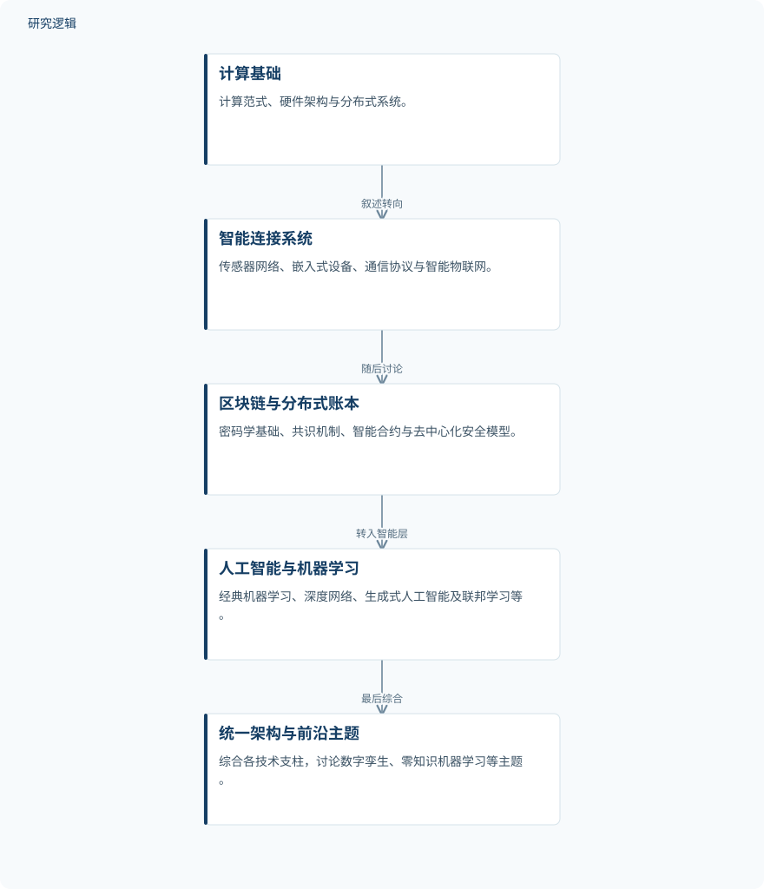

摘要解读
先进计算技术：物联网、区块链、人工智能与机器学习
ADVANCED COMPUTING TECHNOLOGIES: IoT,BLOCKCHAIN, AI, AND MACHINE LEARNING
解读更新 2026-11-10 15:46 · 依据公开摘要整理，未核验全文细节
物联网采集的数据，如何与可信机制和智能决策连接起来？这部著作将物联网、区块链与人工智能放在统一架构中讨论，阅读价值在于理解技术之间的分工与联系，而非获取某项算法的性能结论。
文章目录
从单项技术走向协同系统
摘要关注的核心问题，是如何将物联网、区块链、人工智能与机器学习整合为数字基础设施。其基本叙述是：物联网承担现实数据感知，区块链提供不可篡改与去中心化信任机制，人工智能和机器学习处理信息，面向实时、自主决策。
需要先辨明文献类型：摘要将本作定位为教材或行业参考书，而不是报告单一实验的研究论文。其讨论连接基础理论、系统设计、架构与部署，目标是帮助读者理解可扩展、安全且具韧性的信息物理系统。
按基础、连接、信任与智能展开
摘要明确给出的是内容组织方式，而非可复现的实验方法。全书先介绍计算范式、硬件架构和分布式系统，再讨论传感器网络、嵌入式设备、通信协议及智能物联网，随后进入密码学基础、共识机制、智能合约与分布式账本。
智能层覆盖经典机器学习、深度神经网络、Transformer架构、计算机视觉、生成式人工智能、可解释人工智能和隐私保护联邦学习。最后，叙述转向统一架构，并纳入数字孪生、零知识机器学习、智能体人工智能、量子范式与可持续计算。
依据摘要整理的内容展开示意


仅展示摘要明确陈述的章节叙述顺序，不表示实验流程、技术依赖或经过验证的系统架构；此图不是论文原图。
下载 SVG图示关系说明
实线表示相邻阶段的信息流，虚线表示跨阶段联系或反馈。
计算基础 → 智能连接系统：叙述转向；智能连接系统 → 区块链与分布式账本：随后讨论；区块链与分布式账本 → 人工智能与机器学习：转入智能层；人工智能与机器学习 → 统一架构与前沿主题：最后综合
摘要呈现的是整合主张，而非性能结果
摘要的主要观点是，各技术的价值不仅来自独立能力，也来自协同：数据感知、去中心化信任与智能处理构成互补角色。不过，这属于作者提出的系统性认识，摘要没有报告可据以量化这种协同收益的实验结果。
摘要还说明，书中结合智能电网、自主交通、精准农业和数字医疗案例，将概念基础与应用场景联系起来。这表明其内容具有跨领域覆盖，但不能据此认定统一架构已在这些场景中取得经过比较验证的效果。
案例深度与验证范围仍需查阅正文
仅凭本次摘要，无法判断案例采用了哪些数据、样本规模多大、比较对象如何设置，也无法核实评价指标、部署条件与验证范围。摘要未提供这些细节，不等于书中没有相关内容；同样，面向安全性、可扩展性和韧性的设计目标，也不能当作已经测得的改进。
阅读启发：关注数字孪生与智能决策的连接
阅读启发：对智能运维读者，可优先关注数字孪生与统一架构部分，进一步阅读其如何解释感知数据、可信机制和智能决策之间的接口。摘要并未明确报告故障诊断、预测维护或剩余寿命任务，因此不宜将这些应用视为本书已经验证的成果。
以上为本站阅读启发与建议，不是论文已验证的结论。